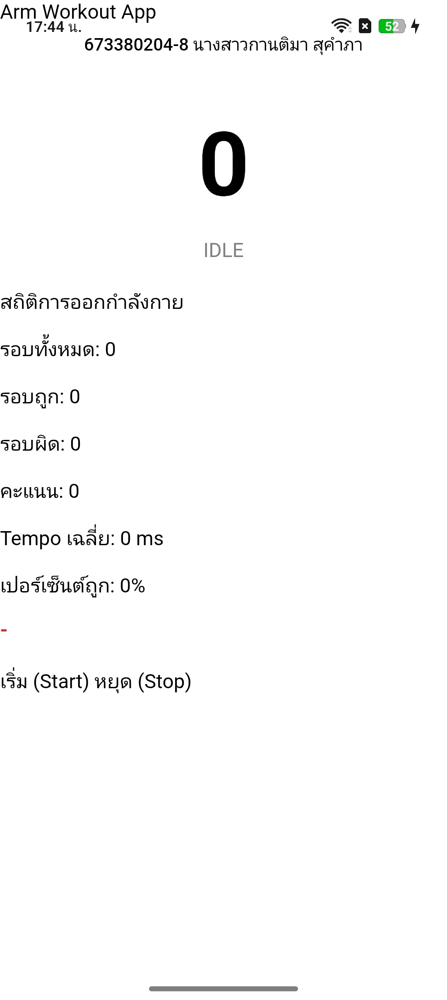
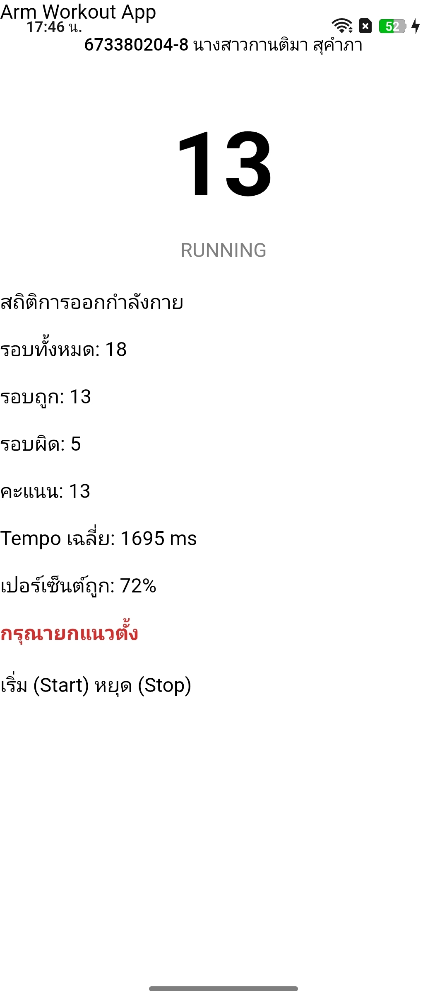
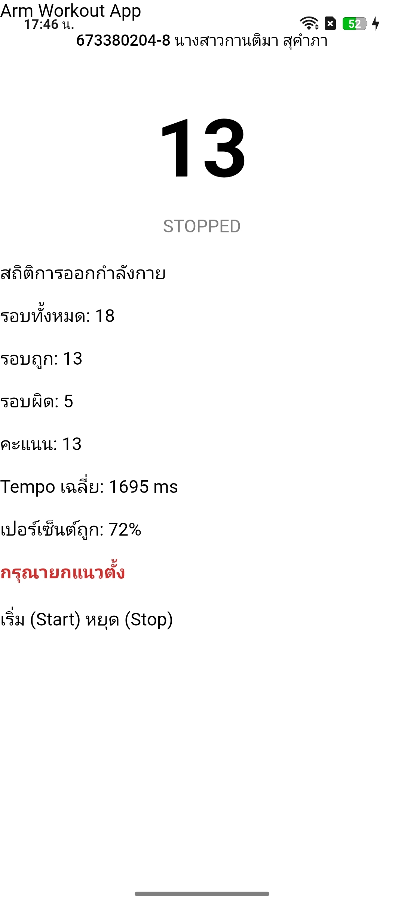

รหัสนักศึกษา 673380204-8
นางสาวกานติมา สุคำภา
แอปพลิเคชัน Arm Workout App พัฒนาด้วย Ionic + Vue และ Capacitor ใช้ Accelerometer ตรวจจับการยกแขนขึ้น-ลง มีระบบตรวจสอบ Range of Motion, Tempo และแนวตั้ง พร้อมแจ้งเตือนด้วยเสียง (Text-to-Speech) และการสั่น (Haptics)



นักศึกษาสาธิตการใช้งานแอปด้วยตนเอง แสดงการกด Start มีเสียงแนะนำ และสามารถนับรอบเมื่อยกแขนขึ้น-ลง
ใช้ AI ช่วยจัด layout UI, อธิบาย logic ของ ArmWorkoutEngine, refactor โค้ด และช่วยแก้ TypeScript error
ปรับค่า threshold ให้เหมาะกับอุปกรณ์จริง, ทดสอบและแก้ไข algorithm, ปรับ UI ให้เหมาะกับหน้าจอมือถือ, และจัดทำวิดีโอสาธิตด้วยตนเอง